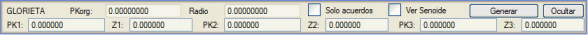
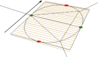
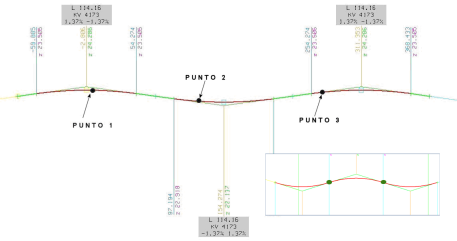
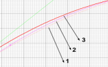
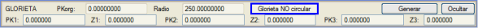

| |
|
KIRMIZI KOTLARIN OTOMATİK OLUŞTURULMASI: DÖNEL KAVŞAK VE KATENER
|
Dönel kavşak kırmızı kotlarının otomatik oluşturulması
Bir katener boykesitinin otomatik oluşturulması Dönel kavşak kırmızı kotlarının otomatik oluşturulması [ARAÇLAR] içindeki DÖNEL KAVŞAK komutuna basıldığında, KIRMIZI KOT menüsü, sürekli bir drenajı destekleyen bir düzlem tanımlamak amacıyla, kırmızı kotu üç noktadan geçen dairesel bir dönel kavşağı hesaplamak için özel seçenekler içeren bir iletişim kutusu açar. 
Sinüsoidal eğriyi gör seçeneği, düzlemin dönel kavşak ekseninin yönlendirici silindiriyle gerçek kesişimini görmeyi sağlar. Bu, olası iki çözümden birini kullanırken yapılan hatayı grafiksel olarak ölçmeyi ve parabolik düşey kurplarla hesaplanan verilerin gerçek sinüsoidal şekle 'benzerliğini' karşılaştırmayı mümkün kılar. %1'den düşük eğimler için yaklaşık 1 cm ve %3-4'lük eğimler için 3 cm civarında olan belirli kot farklılıkları vardır ve bir parabolik düşey kurp sinüsoidal şekli %100 temsil edemeyeceğinden mantıksal olarak kaçınılmazdır. [Oluştur] düğmesine basıldığında, kırmızı kotu tanımlamak için gerekli veriler otomatik olarak hesaplanır, böylece düşey güzergah, KM ve kotuyla verilen üç nokta tarafından tanımlanan düzlemde olur. Hesaplanan sinüsoidal kırmızı kot, düzlemin yüksek ve alçak noktalarından geçen gerekli birleşim parabolleriyle maksimum eğim ve maksimum rampa noktalarından geçen kırmızı kotlarla yaklaştırılır. Standart yöntem, birleşim eğrileri arasında, uzunluğu otomatik olarak hesaplanan bir düz kırmızı kot kesimi bırakır. Sadece birleşim eğrileri seçeneği, bu düz veya tekdüze kesimleri ortadan kaldırarak teğetlik noktalarında 'birbirine değen' paraboller oluşturur. 
Bu ikinci çözüm daha estetiktir, ancak teğetlik noktalarındaki eğim daha büyüktür ve sonuçtaki kırmızı kot, resimde görülebileceği gibi matematiksel sinüsoidalden daha fazla uzaklaşır. 1 numaralı poligon hat sinüsoidali, 2 numara standart yöntemle oluşturulan kırmızı kotu ve 3 numara düz kesimler olmadan 'saf' birleşim eğrileriyle oluşturulan kırmızı kotu temsil eder. Bu araç, üç noktanın tanımladığı düzleme karşılık gelen bir dever diyagramı oluşturma seçeneği de sunar. Her 10 grad'da bir, maksimum eğim ve rampa noktalarından (sıfır dever) ve yüksek ve alçak noktalardan (maksimum eğim = dever) geçerek bir veri oluşturulur. Dönel kavşağın tanımı için girilen noktalar hem .ras hem de .vol dosyasında saklanır. Bu araç, Dönel Kavşak olmayan eksenler (dairesel olmayan kapalı eksenler, eliptik, ...) için de kullanılabilir ve bu durumda bize poligonal bir kırmızı kot döndürür. 
Not: Unutmayın ki Ayarla aracı, bu kırmızı kotu belirli bir toleranstan başlayarak birleşim eğrileriyle basitleştirmeyi sağlar.
Bir katener boykesitinin otomatik oluşturulması [ARAÇLAR] içindeki KATENER aracı, bir dizi nokta (KM,Z) ve her iki nokta arasında bir KV tanımlamayı sağlayan bir iletişim kutusu gösterir. [Oluştur]'a basıldığında, bu veriler nokta ve eğim ile KV'ye göre kırmızı kotlara dönüştürülür ve bu noktalar arasına asılı bir katener simüle edilir.
|